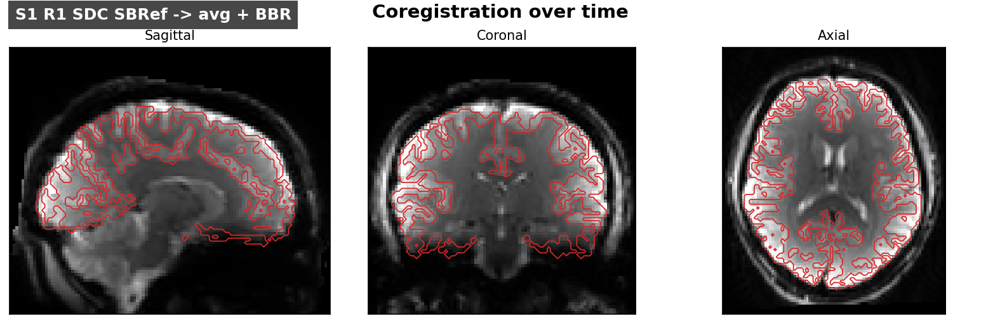
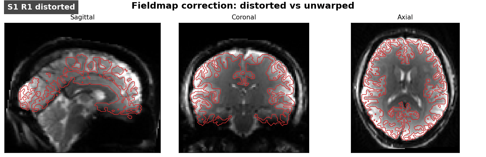
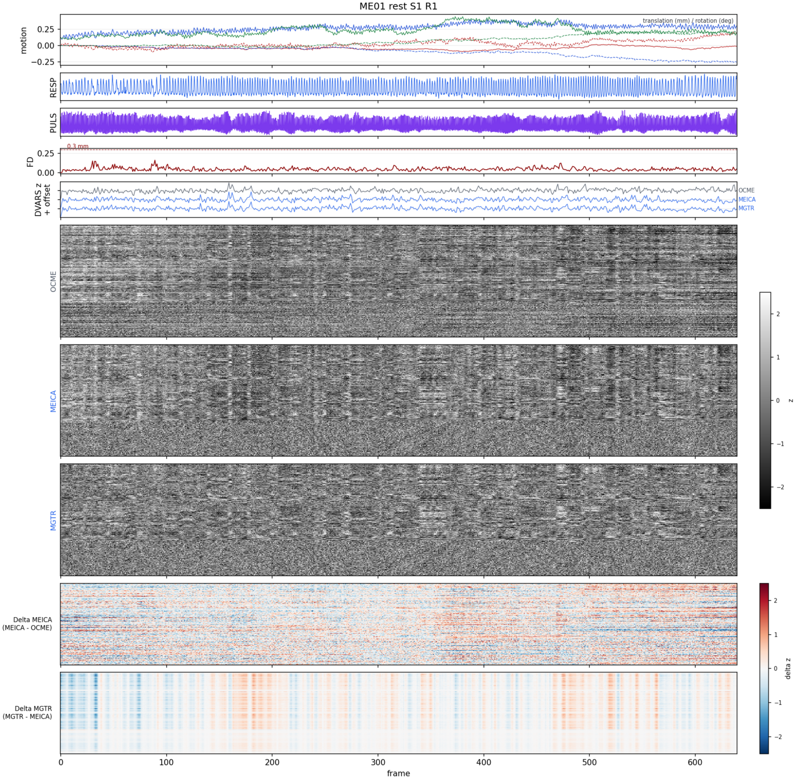
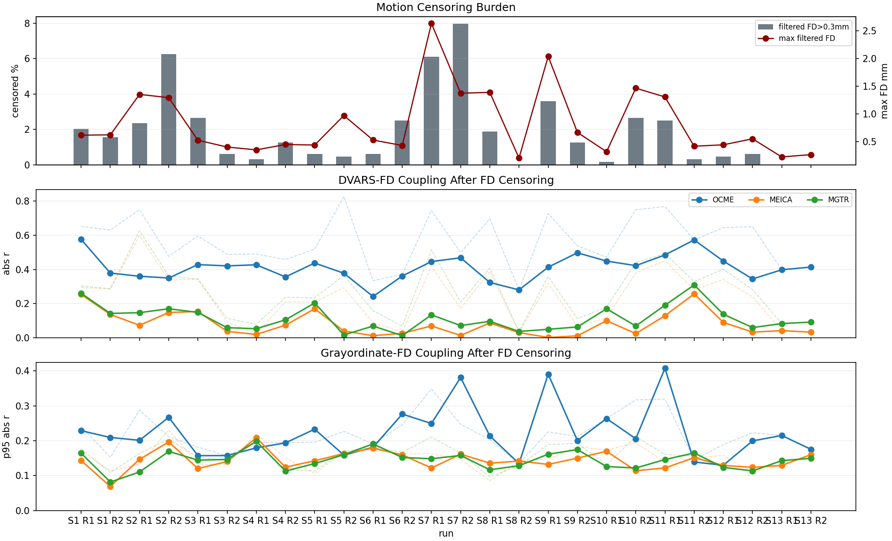
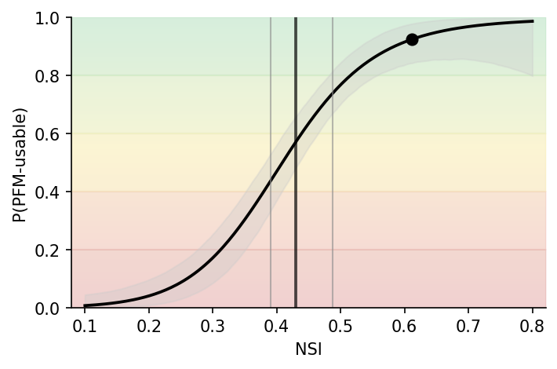
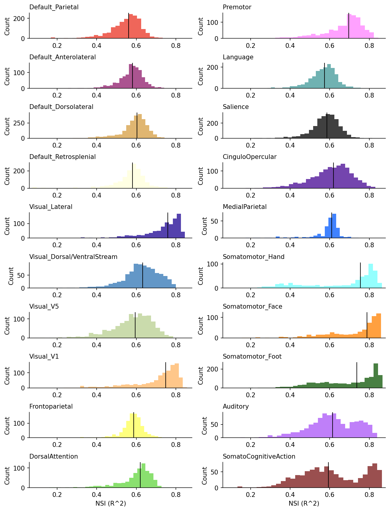
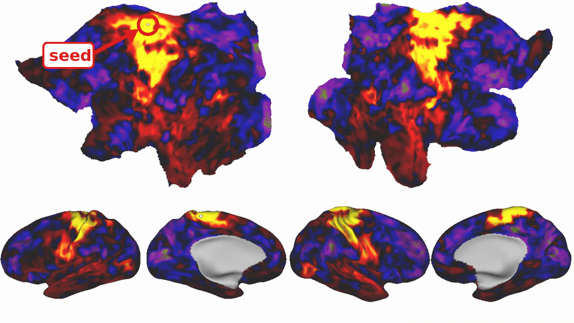

Quality-control gallery
Examples of alignment, motion and physiology, expert-calibrated FC quality scores, and crawling-seed FC for reviewing processed individual data. Individual 1 supplies the longitudinal and run-level examples; older summary reportlets retain their original densely sampled examples.
Alignment and fieldmap/SDC review
Focused transitions and the complete longitudinal alignment comparison show saved independent alignment and within-subject template refinement.


These are production reportlets from QC/Coreg/ and QC/Fieldmaps/. Review the complete HTML reports and metrics, including regions with weak signal or potential susceptibility-related dropout.
Signal quality and network signal

The motion figure shows Individual 1 session 1, run 1. It uses saved processing-stage CIFTIs, the production QC plotting code, and 1,200 sampled grayordinates. The respiratory and pulse channels are aligned to scanner acquisition ticks and shown at their native temporal detail. No denoising is rerun. Its 0.3 mm FD line reflects the example configuration, not a recommended universal threshold.

This unchanged production reportlet summarizes all 26 runs. The lower panels compare absolute signal-motion correlations through processing stages after FD censoring; faint dashed traces show the corresponding values before censoring. Lower coupling alone does not establish that every source of artifact is removed.


The curve shows model-estimated PFM usability from expert-calibrated FC quality scores (Lynch et al., 2026; implemented by the NSI module). It is not a direct test–retest measurement, and its operating characteristics should not be assumed to transfer to every acquisition or population. Network-wise summaries help reveal heterogeneous quality that a whole-brain average can hide.
Seed-FC review

Full Individual 1 seed-FC movie. The looping GIF samples one frame per second from the 70.2-second movie and plays at four frames per second, covering the full sweep after a three-second opening callout identifies the small white seed. The MP4 retains all frames and has no added callout. The still image is decoded at 12 seconds. The movie uses Individual 1 subject-specific surfaces and the concatenated, 1.7 mm-smoothed resting-state input used for the RidgePFM example. The movie and scene are written to QC/CrawlingSeedFC/ when enabled.

Provenance and sharing
assets/manifest.json records bundled file fingerprints and rendering types. Source data and local provenance remain separate from the documentation assets. Participant-derived figures require sharing review before public distribution.